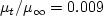

Results are shown here from 2 compressible codes
so that the user may compare their own compressible code results. Multiple grids were
used so the user can see trends with grid refinement. Different codes will behave
differently with grid refinement depending on many factors (including code order of accuracy
and other numerics),
but it would be expected that as the grid is refined the results
will tend toward an "infinite grid" solution that is the same.
Be careful when comparing details: any differences in boundary conditions or flow conditions
may affect results.
Two independent compressible RANS codes,
CFL3D and FUN3D, were used to compute this
bump-in-channel flow with the Wilcox2006-klim-m model
(see full description on
Wilcox k-omega page).
The full series of 5 grids were used.
CFL3D is a cell-centered structured-grid code, and FUN3D
is a node-centered unstructured-grid code (FUN3D can solve on mixed element grids, so this case
was computed on the same hexahedral grid used by CFL3D). Both codes used Roe's Flux Difference
Splitting and a UMUSCL upwind approach. In CFL3D its standard UMUSCL (kappa=0.33333) scheme was
used, whereas in FUN3D the 3-D mixed-element default UMUSCL 0.5 was used. Both codes were run with
full Navier-Stokes (as opposed to thin-layer, which is CFL3D's default mode of operation),
and both codes used first-order upwinding for the advective terms of the turbulence model.
Details about the codes can be found on their respective websites,
the links for which are given on this site's
home page.
The codes were not run to machine-zero iterative convergence, but an attempt was made to converge
sufficiently so that results of interest were well within normal engineering tolerance and
plotting accuracy. For example, for CFL3D the density residual was typically
driven down below 10-12. It should be kept in mind that many of the files given below
contain computed values directly from the codes,
using a precision greater than the convergence tolerance (i.e., the values
in the files are not necessarily as precise as the number of digits given).
Note that in both CFL3D and FUN3D, the production term

is approximated by

which is exact for incompressible flow. For this particular low-speed flow, the approximation is
very accurate.
(Previously on this page the results were reported as Wilcox2006-klim solutions, but more properly they should be referred
to as Wilcox2006-klim-m because of this approximation and the fact that the
 term is ignored in tau_ij in the momentum and energy equations.)
term is ignored in tau_ij in the momentum and energy equations.)
For the CFL3D and FUN3D tests reported below, the turbulent inflow boundary conditions used for Wilcox2006-klim-m
were the following:


The above two equations represent the "standard" Wilcox2006-klim-m boundary condition
values used by both CFL3D and FUN3D, chosen to achieve
a not-too-low level of freestream
turbulent kinetic energy, a not-too-severe rate of freestream turbulence decay,
and a reasonable level of freestream turbulent eddy viscosity of
.
For the interested reader, typical input files for this problem are given here:
CFL3D V6.5:
FUN3D:
For this flow, an odd-even decoupling occurs in FUN3D on the finest grid using the default unweighted least-square
gradient. This decoupling is particularly noticeable, for example, in plots of Cp along a spanwise grid line
somewhat upstream of the bump peak.
Preliminary studies indicate the decoupling is associated with gradients near the inflection point
in the bump surface.
Although not done for the results below, the decoupling can be eliminated in FUN3D
by using a mapping method based on distance from the surface for
the mean flow inviscid fluxes. See the
3D Modified Bump-in-channel Validation case
for SA-neg in the Turbulence Model Numerical Analysis section of this website.
Also see AIAA paper 2016-0858,
https://doi.org/10.2514/6.2016-0858.
The following plots show: (1) total drag coefficient, (2) pressure drag coefficient,
(3) viscous drag coefficient, and (4) total lift coefficient for the 3D bump.
Both codes are tending toward similar integrated force coefficient values
as the grid is refined.
Using the uncertainty estimation procedure from the Fluids Engineering Division of the ASME (Celik, I. B.,
Ghia, U., Roache, P. J., Freitas, C. J., Coleman, H., Raad, P. E.,
"Procedure for Estimation and Reporting of Uncertainty Due
to Discretization in CFD Applications," Journal of Fluids Engineering, Vol. 130, July 2008, 078001, https://doi.org/10.1115/1.2960953), described in Summary of Uncertainty Procedure,
the finest 3 grids yield the following:
| Code |
Quantity |
Computed apparent order, p |
Approx rel fine-grid error, ea21 |
Extrap rel fine-grid error, eext21 |
Fine-grid convergence index, GCIfine21 |
| CFL3D |
Cd |
3.70 |
0.486% |
0.041% |
8.488% |
| CFL3D |
Cd,p |
2.81 |
9.150% |
1.543% |
1.899% |
| CFL3D |
Cd,v |
1.24 |
0.705% |
0.516% |
0.649% |
| CFL3D |
CL |
1.44 |
0.422% |
0.244% |
0.306% |
| FUN3D |
Cd |
oscillatory convergence |
0.403% |
N/A |
N/A |
| FUN3D |
Cd,p |
3.36 |
6.480% |
0.706% |
91.035% |
| FUN3D |
Cd,v |
0.04 |
1.378% |
32.192% |
8.149% |
| FUN3D |
CL |
1.14 |
0.205% |
0.170% |
0.213% |
The data file that generated the above plots is given here:
force_convergence_w06.dat.
The surface pressure coefficient from both codes on the second-finest
33 x 353 x 161 grid
over the bump wall and at y=0 is shown in the next plots.
Both codes yield nearly identical results.
The data files that generated the above plots are given here:
cp_surface_w06_cfl3d.dat.gz,
cp_y0_w06_cfl3d.dat.gz,
cp_surface_w06_fun3d.dat.gz,
cp_y0_w06_fun3d.dat.gz.
Note that these are all gzipped
Tecplot
formatted files, so you must either have Tecplot or know how to read their format in order to use these
files.
The eddy viscosity contours (nondimensionalized by freestream laminar viscosity),
as well as nondimensional k and omega contours
from the two codes on the second-finest 33 x 353 x 161 grid are shown
in the following plots, extracted at two different x-locations
(z-scale expanded for clarity). Results from the two codes are reasonably similar on this grid size.
(Note legends do not necessarily reflect min and max values.)
The data files that generated the above plots are given here:
mut_0.3_cfl3d.dat.gz,
mut_0.3_fun3d.dat.gz,
mut_1.2_cfl3d.dat.gz,
mut_1.2_fun3d.dat.gz.
Note that these are all gzipped
Tecplot
formatted files, so you must either have Tecplot or know how to read their format
in order to use these files.
Also note that the slicing tool in Tecplot was used to generate this data,
extracting data along x-constant planes. These cutting planes do not necessarily
coincide with grid locations. Thus, the x, y, and z locations
given in the data files do not reflect actual points in
the grid used.
Note for users of OpenFOAM.
Return to: 3D Bump-in-channel Verification Case Intro Page
Return to: Turbulence Modeling Resource Home Page
Recent significant updates:
07/18/2018 - added note regarding odd-even decoupling in FUN3D on finest grid for this case
Page Curators: Christopher Rumsey,
Ethan Vogel,
Clark Pederson
Last Updated: 11/08/2021